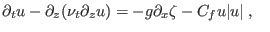
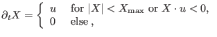
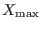
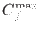

Next: Storing the results Up: Module seagrass Previous: Initialise the sea grass Contents
INTERFACE:
subroutine do_seagrass(nlev,dt)DESCRIPTION:
Here the time depending seagrass equation suggested by Verduin and Backhaus (2000) is calculated. In order to explain the basic principle, an idealised example is examined here with a simplified momentum equation,
|  | (271) |
|  | (272) |
 |
(273) |
The maximum excursion limits  and the friction coefficients  are read from a file.
The production of turbulence is calculated here as the sum of shear production and friction loss at the seagrass leaves,
USES:
use meanflow, only: u,v,h,drag,xP IMPLICIT NONEINPUT PARAMETERS:
integer, intent(in) :: nlev REALTYPE, intent(in) :: dtREVISION HISTORY:
Original author(s): Karsten Bolding & Hans BurchardLOCAL VARIABLES:
integer :: i REALTYPE :: dist REALTYPE :: grassfric(0:nlev) REALTYPE :: excur(0:nlev) REALTYPE :: z(0:nlev)
Karsten Bolding 2012-12-28